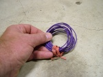
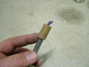
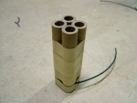

Flying fish mine
From PyroGuide
|
Flying fish fuse mines are a pyrotechnic device that fire small precut lengths of fuse out of a paper tube. The effect is short, but visually it is a crowd pleaser. As the fuse is self propelled into the air is darts across the sky in erratic directions. The firework described here consists of a thick walled paper tube that is tightly sealed by a clay end plug at one end. A loosely fitting paper plug is gently pressed into the end. Inside the base of the mine, a quantity of precut flying fish fuse are inserted. The entire device is glued to a wooden base for stability. When the mine is fired, the paper plug gives way and the fuse is shot upwards into the sky. Then they dart across the sky in unpredictable directions and normally burn out before they reach the ground. |
[edit] MaterialsAn entire kit for flying fish mines can be purchased at Skylighter.com  Casing End plugs Fuse Lift charge Rammer or wooden dowel Misc items |
[edit] Construction Take the casing and seal one end of it with a small piece of paper tape. Stand the casing upright on a solid surface and using your funnel place a 1/4 of a teaspoon of powdered clay into the casing. Insert the rammer into the casing and with your rubber hammer give the rammer a few good thumps. Be careful not to hit it to hard as you may split your casing at the base rendering it useless. It just needs to be firm enough to compress the clay powder until it's hard. Your aim is to create a clay plug this is the same thickness as the inner diameter of your casing, in this case 10mm. You may need to add another 1/4 of a teaspoon of powder clay to achieve this. Remove the paper tape from the base to expose the clay end plug. |
 Use your drill to make a small 2mm hole just above the clay plug. This is where the visco fuse will be inserted. Do not drill a hole that is too large otherwise the internal pressure generated inside the casing will escape out of the hole and may result in your flying fish fuse not ejecting out of the tube as effectively. Cut a 10cm length of visco fuse and insert this into the 2mm hole. |
|
 Now cut your flying fish fuse into 2cm lengths and you will need about 8 to 10 sections. To make loading the tube easier cut a small 2cm length of paper tube and slide this over the top of your rammer about 1cm. Insert the sections of flying fish fuse into the 1cm deep hole until you can not insert any more. |
|
 Now, using your rammer, gently push the flying fish fuse sections all the way down into the casing so it comes in contact with the visco fuse. Firmly secure the visco fuse to the side of the casing with some paper tape. Make sure that they comfortably fit into the tube otherwise if they are packed too tightly they will not eject. |
|
 The device now needs to be secured on a wooden board or similar with a big blob of hot melt glue. Make sure the board has a wide base and can not be knocked over easily. This type of firework is very effective when about 10+ of them are chained together with about 1-2 second delay between each effect. In this example I have used 4. |
|
Reloading  You can reload your casing as long as the previous shoot not has damaged it. Give your casing at least 30 minutes to rest before reloading, as there may be some hot embers inside you can't see. This can be dangerous when you are reloading an explosive substance, as it could ignite unexpectedly. Examine your fuse hole to ensure it is still in good condition and has not been burnt into a bigger hole. This also includes a good examination of the casing walls. If the casing walls are thick enough you should get several shots before having to retire it. Before reloading your tube, it is recommended you clean it with a large drill bit. Use a 9mm or 10 mm drill bit, and with your fingers gently slide this inside the casing and twist to remove any unwanted dross. If you are not sure your casing can withstand another shoot then don't risk it... |

{kind=link}
{kind=link}
{kind=link}